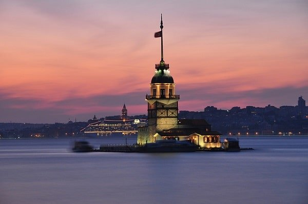
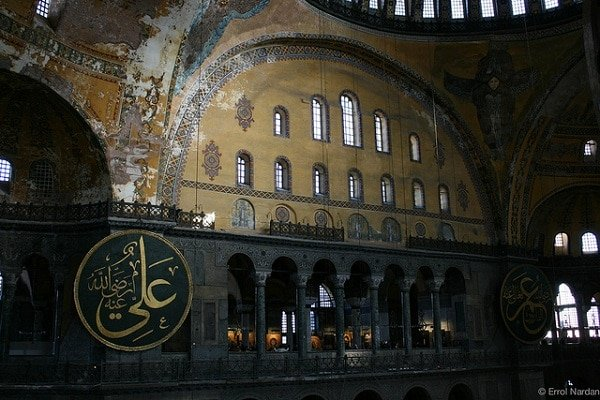
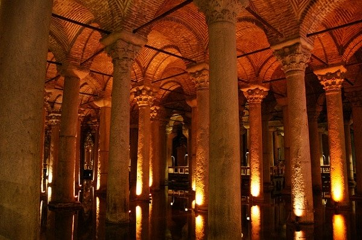
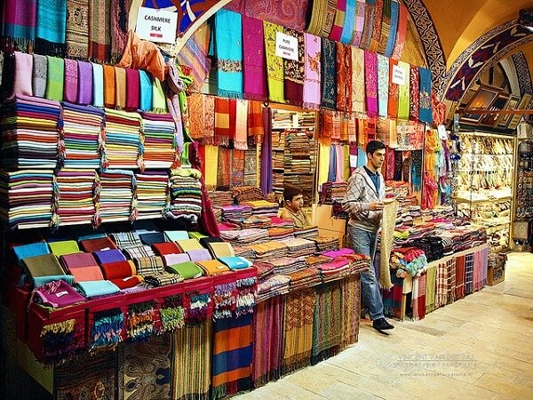
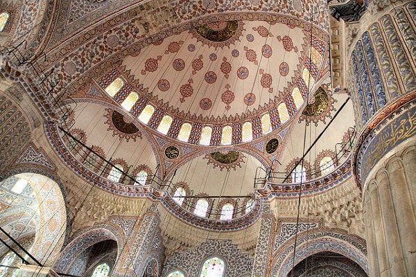

Quelles sont les meilleures choses à faire et voir dans la plus grande ville de Turquie ?
Istanbul est souvent désignée comme le lieu de rencontre entre l’Orient et l’Occident. C’est la seule ville au monde construite sur deux continents, le détroit du Bosphore divisant la ville en deux et séparant l’Europe de l’Asie. Vous passerez certainement la plupart de votre temps sur la rive européenne, car c’est là que les quartiers historiques et commerciaux se trouvent. Plusieurs zones historiques d’Istanbul ont été classées au patrimoine mondial de l’UNESCO. La cité stambouliote est absolument à visiter lors d’un voyage en Turquie.
Une croisière sur le Bosphore
Un voyage à Istanbul n’est pas complet sans une croisière sur le Bosphore. Cela offre non seulement un bel aperçu de la ville, mais les rives à la fois européenne et asiatique du célèbre chenal ont beaucoup à offrir : un grand nombre d’anciens palais et demeures s’y trouvent, ainsi que la Tour de Léandre. Concernant la durée de la croisière, vous avez le choix entre une visite courte (si vous êtes pressé) ou longue (sur une journée). Il y a aussi la croisière très prisée en été au moment du coucher du soleil.

La Basilique Sainte-Sophie
Cette splendide église du 6ème siècle devenue une mosquée au 15ème et maintenant un musée (depuis 1934) fait partie des plus grandes réalisations architecturales du monde. Après des années de restauration, la basilique Sainte-Sophie (Aya Sofya) est aussi belle qu’elle le fut autrefois. A l’intérieur, vous pourrez admirer les nombreuses mosaïques et l’immense dôme.

La Citerne Basilique
Istanbul n’est pas seulement fascinante à la surface : elle est aussi sous terre avec la Citerne Basilique (Yerebatan Sarnıcı). Cette magnifique pièce de l’ingéniosité byzantine est une citerne souterraine spectaculaire qui stockait dans le passé de l’eau potable qu’apportaient des aqueducs depuis l’actuelle Bulgarie jusqu’à Istanbul.

Le Grand bazar
Allez chiner au Grand Bazar d’Istanbul. Vieux de plus de 500 ans, il reste encore l’un des plus grands bazars couverts dans le monde. Ses 60 rues intérieures contiennent pas moins de 5000 boutiques, 60 restaurants, 18 fontaines, 12 mosquées, et même une école. Ce n’est pas un piège à touristes comme certains le prétendent. Les locaux viennent acheter ici tous les jours, mais il y a des chances qu’ils soient meilleurs négociateurs que vous ne l’êtes. Le bazar est très célèbre pour les tapis, le cuir, la céramique, les souvenirs et les bijoux. Il est difficile de ne pas se perdre dans ce chaos, alors essayez de vous souvenir par où vous êtes entré avant de vous promener à l’intérieur.

La Mosquée Bleue
On l’appelle ainsi pour les mosaïques bleues qui ornent ses murs intérieurs. C’est la plus célèbre des mosquées d’Istanbul. La construction de Sultanahmet Camii, son nom local, s’est achevée en 1616. Elle se visite mais il y a beaucoup de monde. Etant incontournable, venez-y tôt le matin.

Voici quelques photos de la ville d'Istanbul.